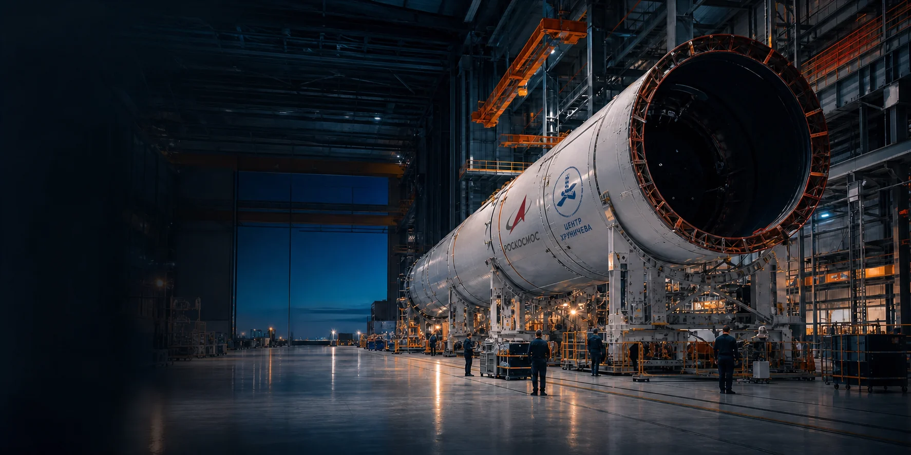

↗
Ракетно-космическая техника
Промышленный опыт, связанный с производством ракет-носителей и космических аппаратов.
Космос
Омск · аэрокосмическое производство
Более восьмидесяти лет инженерной школы, точного производства и работы людей, чьи проекты становятся частью истории страны.
Визуализация создана для концепта и не изображает реальный цех предприятия
Инженерная школа Омска
Производственное объединение «Полёт» — одно из крупнейших промышленных предприятий России, специализирующееся на авиационной и ракетно-космической технике.
По открытым материалам предприятия, здесь выпускались ракеты-носители, космические аппараты, сверхмощные двигатели РД‑170 и самолёты. Сегодня предприятие продолжает техническое перевооружение и развитие высокотехнологичных производств.
Источник: официальный сайт ↗Создано поколениями
Промышленный опыт, связанный с производством ракет-носителей и космических аппаратов.
КосмосИсторическая компетенция предприятия — выпуск самолётов и агрегатов авиационной техники.
АвиацияСтраница истории предприятия отмечает опыт выпуска сверхмощных двигателей РД‑170.
ЭнергияВысокотехнологичные процессы, техническое перевооружение и квалифицированные специалисты.
ТехнологииСвязь времён
Формирование промышленной и инженерной школы предприятия в Омске.
Опыт выпуска самолётов, космических аппаратов, ракет-носителей и двигателей.
Вхождение производственного объединения «Полёт» в состав Центра Хруничева.
Техническое перевооружение, высокотехнологичные производства и новые рабочие места.
Правительственные награды
Работа, которой гордятся
Предприятию нужны инженеры и квалифицированные рабочие. На официальной странице опубликованы вакансии инженерного и производственного профиля.
Смотреть вакансии ↗Примеры открытых направлений
В центре событий
Омск · Россия